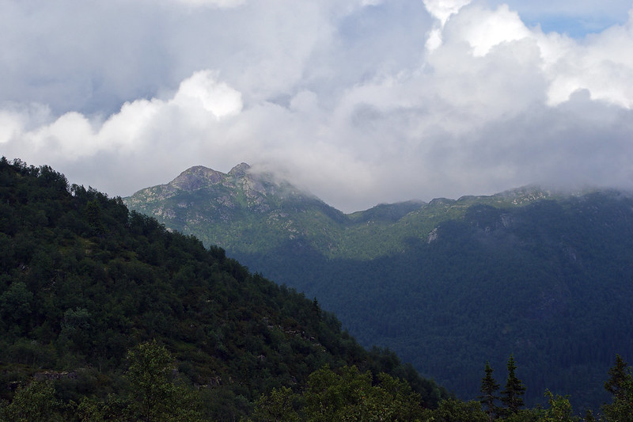

Il turismo
In collaborazione con molte figure locali ed esperti del territorio limitrofo, offriamo la possibilità di poter fare un viaggio immersivo tra i paesaggi montanari che contraddistinguono queste zone.


In collaborazione con molte figure locali ed esperti del territorio limitrofo, offriamo la possibilità di poter fare un viaggio immersivo tra i paesaggi montanari che contraddistinguono queste zone.
